|
|
| echinoids text index | photo index |
| Phylum Echinodermata > Class Echinodea > Order Clypeasteroida |
| Sand
dollars Order Clypeasteroida updated Apr 2020
Where seen? Sand dollars are seen on many of our sandy shores and can be particularly common on Chek Jawa, Tanah Merah and some Southern shores. Usually half buried in the sand. Some kinds of sand dollars are more commonly seen near seagrasses. What are sand dollars? Sand dollars are animals! Seeing one for the first time, it may be hard to believe that these are living creatures. They are so flat and appear lifeless. Sand dollars belong to Phylum Echinodermata and Class Echinoidea which includes sea urchins and heart urchins. Features: They got their name because they resemble a one-dollar coin. Like other echinoderms, sand dollars are symmetrical along five axes, and have tube feet and spines. Their flat disk-like shape is an adaptation for life on the sea bottom where they gather detritus. Coat of spines: Instead of the ferocious, long spines of their spherical sea urchin cousins, sand dollars have tiny, soft spines. These spines are moveable and used like tiny spades to dig into the sand or to move around. The dense layer of spines also keeps sediments off so there is a flow of oxygenated water across the body. Like the sea urchins, sand dollars also have tiny structures called pedicellariae which look like jaws on stalks. The main function of these is to keep the body of the sand dollar free of debris and parasites. They may also be used to collect tiny food particles. |
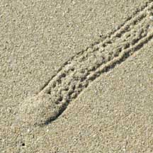 A sand dollar can move quite far under wet sand. Lazarus Island, Jun 09 |
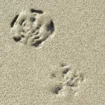 Living sand dollars, not moving under sand. Lazarus Island, Jun 09 |
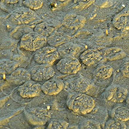 Cake sand dollars are often found in huge numbers. Chek Jawa, Jan 09 |
| Flat skeleton: Sand dollars have
an internal skeleton (called the test) formed out of large ossicles
(pieces made of calcium carbonate) fused together into plates in multiples
of five. The test is a rigid, hollow, flattened disk. To grow larger,
each ossicle is enlarged, and new ossicles added near the anus. In
some sand dollars, there is internal buttressing to support the test.
Nevertheless, sand dollars are still quite fragile so please handle
live ones with care. Breathing petals: The petal design on the upperside of a sand dollar is called a petaloid. The petaloid is a series of tiny holes in the skeleton. Tube feet emerge through these holes and the sand dollar breathes through these feet! These breathing tube feet are short and flattened. A sand dollar's mouth is on its underside, facing the ground. Its anus is on the its underside as well, usually, this is located off-center. Some, but not all, sand dollars have jaws made of a circle of five plates that meet in the middle. Unlike those of the sea urchin, however, the sand dollar's jaws cannot be extended outwards. |
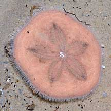 A living sand dollar is covered with spines! East Coast, Nov 08 |
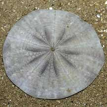 Upperside of test of Ceke sand dollar |
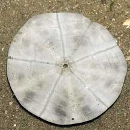 Underside of test |
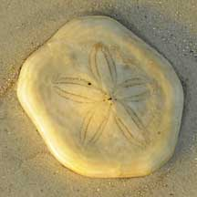 Shape and features of a sand dollar is often more obvious in a dead one. Seringat-Kias, Jun 09 |
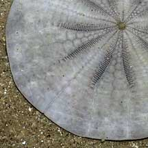 The petalloid is made up of holes where tube feet emerge. This is more obvious in the skeleton of a dead sand dollar. Changi, Jun 06 |
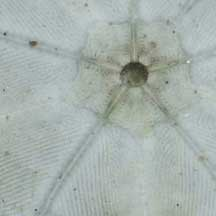 The central mouth is on the underside. Changi, Jun 06 |
| Picky eaters: Most sand dollars
are deposit feeders and process sand to feed on detritus in the sediments.
They don't just process any sand. The dense layer of tiny spines keep
out larger particles and only let in fine ones. Tiny tube feet and
cilia (minute beating hairs) move these fine particles to the food
grooves and along these grooves to the mouth in the center. Dead or alive? Sand dollars may appear dead, but they are very much alive. A living sand dollar is covered with fine spines and appears velvety. A dead one is smooth, without any spines, and the details of skeleton can be seen more clearly. The skeleton is fragile and will shatter at the slightest pressure. |
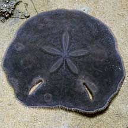 Upperside of living sand dollar Chek Jawa, Jul 08 |
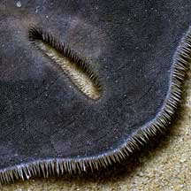 Slot in a Keyhole sand dollar. |
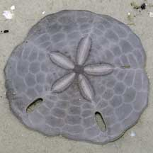 A dead sand dollar has no spines. Chek Jawa, Nov 02 |
| Why do some sand dollars have holes in them? The Keyhole
sand dollar got its common name from the intriguing slot-shaped
holes in the body (called lunules). Suggestions for the function of
these slots range from helping the animal to burrow, right itself,
find food or to prevent the waves from lifting it out of the sand.
The last is the most widely accepted explanation. What eats sand dollars? Some snails such as the Grey bonnet are believed to feed on sand dollars. They are sometimes seen on top of a sand dollar. A Knobbly sea star was seen with its stomach stuck to a sand dollar. A Haddon's carpet anemone was also seen in the process of engulfing one. |
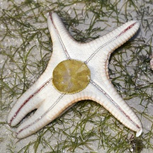 Being eaten by a Knobbly sea star? Cyrene Reef, May 11 Photo shared by Marcus Ng on flickr. |
 Cake sand dollar being swallowed by a Haddon's carpet anemone. Chek Jawa Feb 04 |
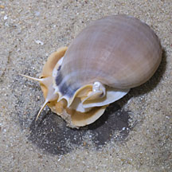 Grey bonnet snail eating a Cake sand dollar. Cyrene, Aug 11 |
| Damaged dollars: Like other echinoderms,
sand dollars can repair minor damage. If you come across an 'uneven'
sand dollar with a part of its body obviously chewed off, look closely
and you might see spines growing on the chewed edge. But if a large
part of the sand dollar is broken, it will probably die. How do upside down sand dollars right themselves? They dig one side into ground and stick the other end out. Eventually, the waves and currents flip them over. This is laborious and they usually need to be in water to achieve this. So please put sand dollars back the right way around. Dollar babies: Sand dollars have separate genders and are usually either male or female. They practice external fertilisation, releasing eggs and sperm simultaneously into the water. 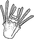 Sand dollars undergo metamorphosis and their larvae look nothing like their adults. The form that first hatches from the eggs are bilaterally symmetrical and free-swimming, drifting with the plankton. At this stage, they have several long 'arms' which are believed to funnel food particles into the central mouth. They eventually settle down and develop into a more sand dollar-like shape. One species of sand dollars (Dendraster excentricus of the US) is known to settle in response to a substance released by adults. This might explain why so many sand dollars of the same species may be found in one place.Human uses: Sand dollar eggs have been extensively studied to better understand cell division and thus some diseases such as cancer, which is associated with uncontrolled cell growth. Status and threats: Some of our sand dollars are listed among the threatened animals of Singapore. The main threat is habitat loss due to reclamation or human activities along the coast that pollute the water. Like other creatures of the intertidal zone, they are affected by human activities such as reclamation and pollution. Trampling by careless visitors and over-collection can also have an impact on local populations. |
| Some Sand dollars on Singapore shores |
| Sand
dollars recorded for Singapore from Wee Y.C. and Peter K. L. Ng. 1994. A First Look at Biodiversity in Singapore. *additions from Lane, David J.W. and Didier Vandenspiegel. 2003. A Guide to Sea Stars and Other Echinderms of Singapore. in red is that listed among the threatened animals of Singapore from Davison, G.W. H. and P. K. L. Ng and Ho Hua Chew, 2008. The Singapore Red Data Book: Threatened plants and animals of Singapore. **from WORMS +from The Biodiversity of Singapore, Lee Kong Chian Natural History Museum.
|
Links
|